O que são células-tronco?
As células-tronco funcionam no microambiente celular se transformando no tecido lesionado ou secretando biofatores que promovem a recuperação do tecido.
Saiba mais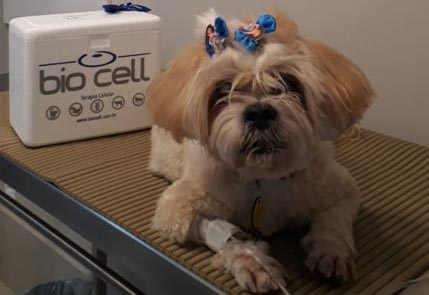
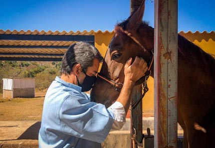
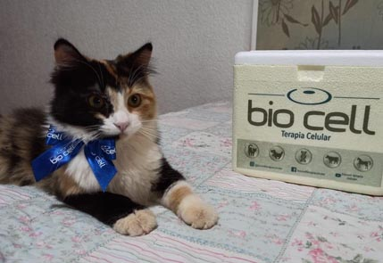
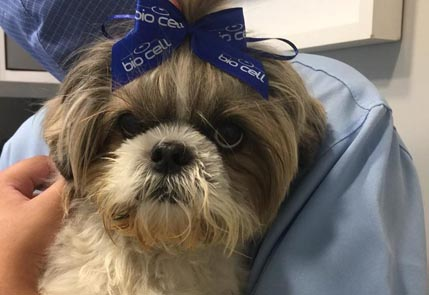
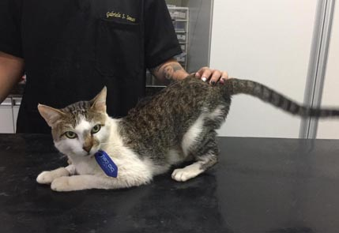
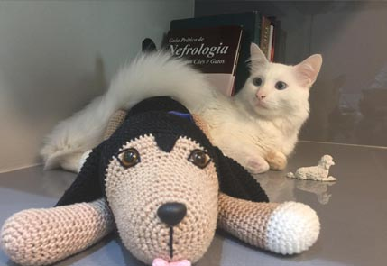
Tecnologia e ciência pioneiras a serviço da qualidade de vida animal
Qualidade de vida
Aqui o seu animal é tratado com o que há de melhor em células-tronco.
Veja os Casos de SucessoProdutos e Serviços
Uma visão rápida dos principais pontos da terapia celular apresentada na home original.
As células-tronco funcionam no microambiente celular se transformando no tecido lesionado ou secretando biofatores que promovem a recuperação do tecido.
Saiba maisApós avaliação pelo médico veterinário, o paciente recebe as células-tronco BIO CELL by Vetnil do banco de doadores de forma tranquila e relaxante.
Saiba maisAs células-tronco BIO CELL by Vetnil podem ser utilizadas em diversas doenças crônicas, agudas, imunomediadas ou lesões.
Saiba maisSobre a
O tratamento com células-tronco BIO CELL by Vetnil é uma opção terapêutica inovadora que visa melhorar o funcionamento dos órgãos e tecidos, melhorando a qualidade de vida dos animais.
As células-tronco processadas e preparadas pela BIO CELL by Vetnil passam por rigoroso controle de qualidade com testes de esterilidade, indução à diferenciação, marcadores moleculares e testes de viabilidade após descongelamento e transporte.
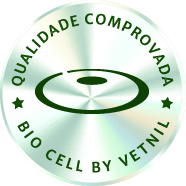
Todo esse controle de qualidade confere às células-tronco BIO CELL by Vetnil uma alta qualidade, proporcionando um tratamento seguro e eficaz.
O compromisso com os valores da Medicina Veterinária move os profissionais da BIO CELL by Vetnil a resgatarem a relação da saúde e bem-estar em prol da qualidade de vida dos animais.
CEO Fundadora - Patrícia MalardTradição e confiabilidade
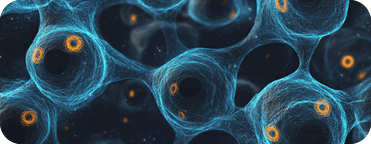
+0Pacientes Tratados
Veterinários Afiliados
Unidades Avançadas
Perguntas
As dúvidas abaixo replicam o conteúdo principal da FAQ apresentada na home do site.
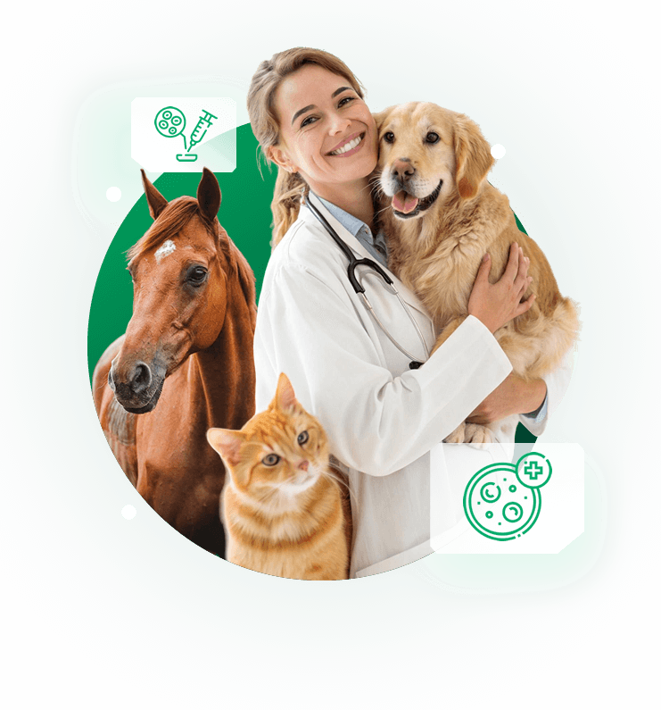
Esse é o maior erro em relação à terapia com células-tronco. Na maioria das vezes, quanto antes o tratamento é iniciado, melhores são as respostas e menor tende a ser o custo final do tratamento.
Elas atuam no microambiente celular se transformando no tecido lesionado ou secretando biofatores que promovem a recuperação do tecido, após avaliação criteriosa do animal.
Quando aplicadas via intravenosa, possuem tropismo pelo processo inflamatório, sendo atraídas para o local de lesão para iniciar o processo de reparação tecidual.
Sim. Quando realizado de forma correta, é extremamente seguro, principalmente quando existe controle de qualidade adequado e processo validado pelo Ministério da Agricultura.
Não. Segundo o conteúdo do site, o tratamento com células-tronco mesenquimais não causa câncer quando as células passam pelo controle de qualidade adequado.
Em muitas doenças, o tratamento promove melhora da qualidade de vida do pet. A expectativa correta de resultado deve ser alinhada com a equipe responsável.
Cuidar da sua família
Que vocês continuem sendo cuidadosos e atenciosos. Muito obrigado por ter salvado a vida do Max, seremos eternamente gratos à BIO CELL by Vetnil.
Yasmin Tutora do MaxWendy está sapeca demais. Parece que rejuvenesceu 5 anos. Me acorda de madrugada para brincar. Graças ao tratamento da BIO CELL by Vetnil.
Carla Tutora da WendyHoje ela anda pra todos os lados e até corre, é bem verdade que do jeitinho dela, mas o que importa é que anda e tem independência.
Andrea Tutora da VidaPassamos para dizer que o Bento está ótimo, comendo bem e bebendo água, gordo que só. Fizemos exames de sangue e os resultados estão ótimos.
Silvia Tutora do BentoHoje a Deb está completamente estabilizada, sem as crises de vômito e diarreia. Eu recomendo a BIO CELL para todas as pessoas.
Francisco Tutor da DebA Liza está muito bem, graças a Deus. Comendo bem, serelepe e até já engordou mais de 1kg.
Erocilda Tutora da Lizza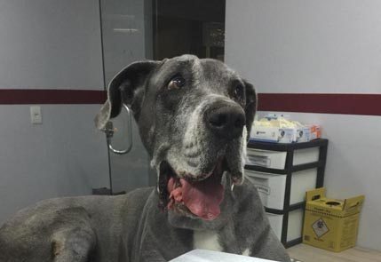
Baruque está bem melhor. Está sentindo menos dores e mancando menos. Graças à aplicação das células-tronco.
Tatianne Tutora do Baruque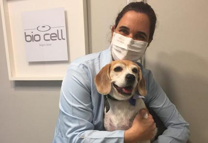
Fiquei surpreendido com a evolução do Balu, porque logo no primeiro dia ele já teve uma disposição fenomenal. Equipe muito profissional e competente.
Juliano Benetti Tutor do Balu